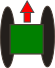
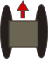

Start Map Server
Stop Map Server
Refresh Map
Refresh Topics
Map Icons
Navigation

Select a GPS topic ...
Select a IMU topic ...
Start
Add Current Point
Rotation:

Select a GPS topic ...
Select a IMU topic ...
Start
Add Current Point
Select a GPS topic ...
Select a IMU topic ...
Start
Add Current Point
Robot
Select a Robot ...
Send Path To Robot
Path Options:
Add Current Point
Remove Last Point
Reset Path
Station Keep At Last Coordinate
Return Options:
Add Current Point
Remove Last Point
Reset Path
Return after
Minutes